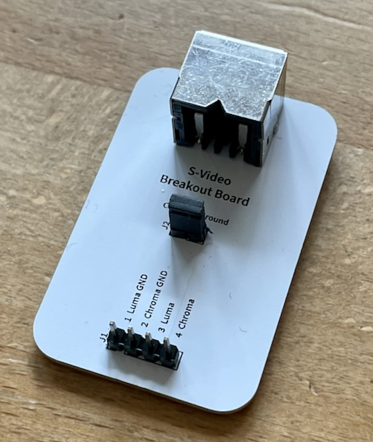
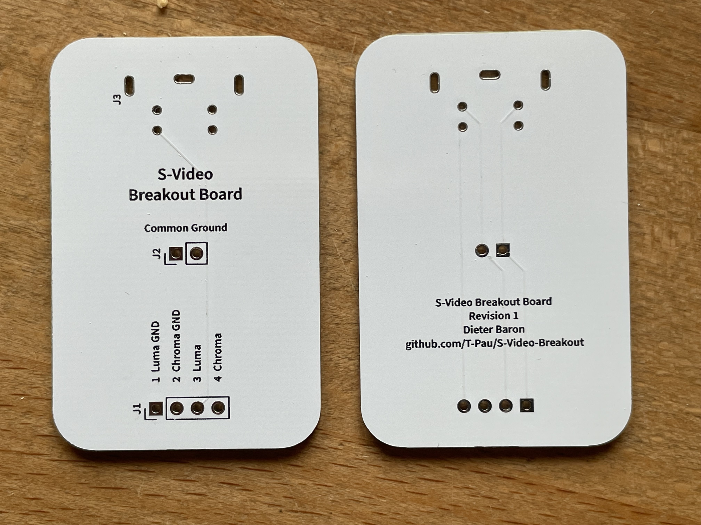

Projekt-Homepage • Interakiver Bestückungsplan • Schaltplan

Diese Platine führt alle Signale des S-Video Steckers an eine Stiftleiste. Zusätzlich können die beiden GND Leitungen per Jumper verbunden werden.
| Komponente | Anzahl | Preis | Anbieter |
| Platine | 1 | €1.00 | |
| 1x2 Stiftleiste | 1 | €0.04 | Reichelt |
| 1x4 Stiftleiste | 1 | €0.07 | Reichelt |
| Jumper | 1 | €0.03 | Reichelt |
| 90° Mini-DIN-4 Buchse | 1 | €1.93 | Mouser |
| nur Platine | €1.00 | ||
| Bausatz | €3.07 |